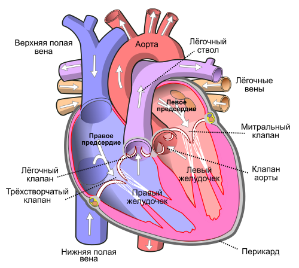

Что такое сердце?
What is the heart?
Жүрек дегеніміз не?
Сердце — это центральный орган кровеносной системы человека, работающий как мощный насос. Оно непрерывно перекачивает кровь по всему телу, обеспечивая ткани кислородом и питательными веществами.
The heart is the central organ of the human circulatory system, functioning as a powerful pump. It continuously pumps blood throughout the body, supplying tissues with oxygen and nutrients.
Жүрек — адамның қан айналым жүйесінің орталық мүшесі, қуатты сорғы ретінде жұмыс істейді. Ол үздіксіз денеге қан айдап, ұлпаларды оттегімен және қоректік заттармен қамтамасыз етеді.
Сердце расположено в грудной полости, между лёгкими, немного смещено влево. Оно защищено грудной клеткой и заключено в оболочку — перикард.
The heart is located in the thoracic cavity, between the lungs, slightly shifted to the left. It is protected by the rib cage and enclosed in a membrane called the pericardium.
Жүрек кеуде қуысында, өкпелердің арасында, солға қарай сәл ығысқан. Оны қабырға қаңқасы қорғайды және перикард деп аталатын қабықпен қоршалған.
Стенка сердца состоит из трёх слоёв: эпикарда (внешний), миокарда (мышечный слой) и эндокарда (внутренний). Самая мощная часть — миокард, благодаря которому сердце сокращается.
The heart wall consists of three layers: epicardium (outer), myocardium (muscle layer), and endocardium (inner). The most powerful part is the myocardium, which enables the heart to contract.
Жүрек қабырғасы үш қабаттан тұрады: эпикард (сыртқы), миокард (бұлшықет қабаты) және эндокард (ішкі). Ең күшті бөлігі — миокард, ол жүректің жиырылуын қамтамасыз етеді.
Сердце человека состоит из четырёх камер: двух предсердий (правого и левого) и двух желудочков. Клапаны между ними регулируют направление тока крови.
The human heart consists of four chambers: two atria (right and left) and two ventricles. The valves between them regulate the direction of blood flow.
Адам жүрегі төрт камерадан тұрады: екі жүрекше (оң және сол) және екі қарынша. Олардың арасындағы қақпақшалар қан ағымының бағытын реттейді.
Кровь циркулирует по двум кругам: большому (тело) и малому (лёгкие). Малый круг начинается в правом желудочке и заканчивается в левом предсердии. Большой круг — от левого желудочка до правого предсердия.
Blood circulates through two circuits: systemic (body) and pulmonary (lungs). The pulmonary circuit begins in the right ventricle and ends in the left atrium. The systemic circuit runs from the left ventricle to the right atrium.
Қан екі шеңбер бойынша айналады: үлкен (денемен) және кіші (өкпе). Кіші шеңбер оң қарыншадан басталып, сол жүрекшеде аяқталады. Үлкен шеңбер сол қарыншадан оң жүрекшеге дейін.


Правое предсердие принимает венозную кровь из организма, а левое — артериальную кровь из лёгких. Желудочки перекачивают кровь в лёгкие и тело соответственно.
The right atrium receives venous blood from the body, while the left receives arterial blood from the lungs. The ventricles pump blood to the lungs and body respectively.
Оң жүрекше ағзадан келген веналық қанды қабылдайды, ал сол жүрекше өкпелерден келген артериялық қанды қабылдайды. Қарыншалар сәйкесінше өкпеге және денемен қанды айдайды.
Сердечные клапаны — это специальные структуры, которые предотвращают обратный ток крови. В их числе: митральный, трёхстворчатый, аортальный и лёгочный клапаны.
Heart valves are special structures that prevent backflow of blood. These include: mitral, tricuspid, aortic, and pulmonary valves.
Жүрек қақпақшалары — қанның кері ағымын болдырмайтын арнайы құрылымдар. Оларға: митральды, үш жапырақты, аорталық және өкпе қақпақшалары жатады.
Сердечный ритм контролируется синусовым узлом — естественным водителем ритма. Он посылает электрические импульсы, заставляющие сердце сокращаться.
The heart rhythm is controlled by the sinoatrial node — the natural pacemaker. It sends electrical impulses that cause the heart to contract.
Жүрек ритмі синус түйіні арқылы басқарылады — бұл табиғи ритм жетекшісі. Ол жүректің жиырылуын қамтамасыз ететін электр импульстарын жібереді.
Сердце сокращается ритмично: систола — фаза сокращения, и диастола — фаза расслабления. В среднем сердце совершает 60–100 ударов в минуту в состоянии покоя.
The heart contracts rhythmically: systole is the contraction phase, and diastole is the relaxation phase. On average, the heart beats 60-100 times per minute at rest.
Жүрек ритмді түрде жиырылады: систола — жиырылу фазасы, диастола — босаңсу фазасы. Орта есеппен, жүрек тыныштық күйінде минутына 60-100 рет соғады.
Сердце снабжается кровью через коронарные артерии. Их закупорка может привести к инфаркту — некрозу сердечной мышцы из-за кислородного голодания.
The heart is supplied with blood through the coronary arteries. Their blockage can lead to a heart attack — necrosis of the heart muscle due to oxygen deprivation.
Жүрек қанмен коронарлы артериялар арқылы қамтамасыз етіледі. Олардың бітелуі инфарктке — жүрек бұлшықетінің оттегі тапшылығынан некрозға ұшырауына алып келуі мүмкін.
Физические упражнения укрепляют миокард, улучшают кровообращение и снижают риск сердечно-сосудистых заболеваний.
Physical exercise strengthens the myocardium, improves circulation, and reduces the risk of cardiovascular diseases.
Дене шынықтыру миокардты нығайтады, қан айналымын жақсартады және жүрек-қан тамырлары ауруларының қаупін азайтады.
Высокий уровень холестерина, стресс, курение, гипертония и малоподвижный образ жизни — основные факторы риска для сердца.
High cholesterol, stress, smoking, hypertension, and a sedentary lifestyle are the main risk factors for the heart.
Холестерин деңгейінің жоғарылығы, стресс, темекі шегу, гипертония және қозғалыссыз өмір салты — жүрек үшін негізгі қауіп факторлары.
Кардиологи рекомендуют регулярно проверять артериальное давление, уровень сахара и холестерина в крови, а также контролировать массу тела.
Cardiologists recommend regularly checking blood pressure, blood sugar and cholesterol levels, as well as monitoring body weight.
Кардиологтар қан қысымын, қандағы қант пен холестерин деңгейін үнемі тексеруді, сонымен қатар салмақты бақылауды ұсынады.
Здоровое питание (овощи, фрукты, рыба, орехи) и отказ от вредных привычек способствуют сохранению здоровья сердца.
Healthy eating (vegetables, fruits, fish, nuts) and avoiding bad habits contribute to maintaining heart health.
Дұрыс тамақтану (көкөністер, жемістер, балық, жаңғақтар) және зиянды әдеттерден бас тарту жүрек саулығын сақтауға көмектеседі.
Сердце — это символ жизни и любви, а также один из самых выносливых органов, работающий без перерыва от рождения до смерти.
The heart is a symbol of life and love, as well as one of the most resilient organs, working continuously from birth to death.
Жүрек — өмір мен махаббаттың символы, сонымен қатар туылғаннан өлгенге дейін үзіліссіз жұмыс істейтін ең төзімді мүшелердің бірі.